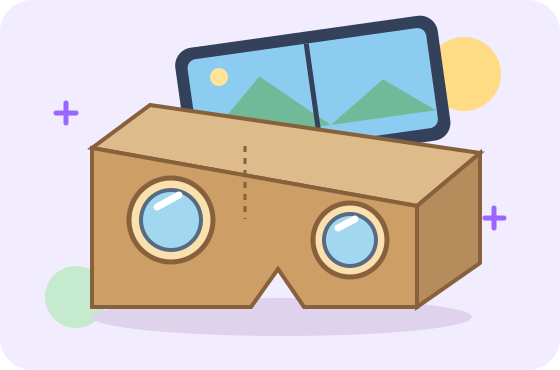
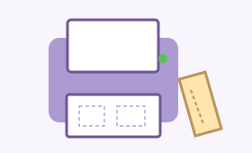
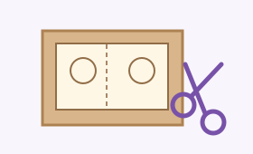
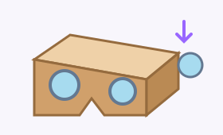
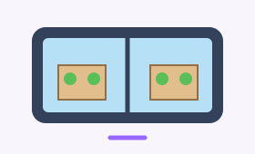
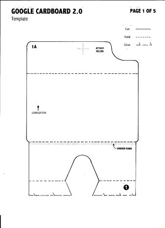

GOOGLE CARDBOARD
UM PEQUENO VISOR. UMA NOVA FORMA DE EXPLORAR.
Que tal olhar o LabMaker por dentro?
O LabMaker pode ser explorado em realidade virtual (VR). Em dispositivos compatíveis, você olha ao redor dos ambientes e sente como se estivesse dentro do laboratório!
O Google Cardboard é um visor criado pelo Google que combina uma estrutura de papelão, duas lentes e um celular. As lentes ajudam cada olho a ver uma imagem da tela, criando uma sensação de profundidade.
É uma opção de menor custo para conhecer a VR: você pode montar a estrutura com materiais simples, usando lentes apropriadas e um celular compatível.

O que vamos separar?
- Papelão firme e fino
- Molde impresso
- Duas lentes próprias para o molde
- Cola ou fita adesiva
- Velcro e elástico
- Celular compatível
- Tesoura e ajuda de um adulto
Vamos montar? Um passo de cada vez
MINI TUTORIAL
1Imprima o molde
Abra o PDF abaixo e imprima as cinco páginas. Escolha tamanho real (100%) e confira as medidas. Evite a opção “Ajustar à página”.

2Prepare as peças
Junte as partes do molde como indicado e cole no papelão. Peça a um adulto para recortar as linhas contínuas e as aberturas. As linhas tracejadas indicam dobras.

3Dobre e encaixe
Siga as abas e as marcas do molde. Encaixe as lentes compatíveis, fixe as partes indicadas e coloque o velcro e o elástico para segurar o celular.

4Prepare e explore
Abra o LabMaker no celular. Com ajuda do professor, confira o modo VR e as duas imagens. Coloque o celular na horizontal, prenda com cuidado e olhe ao redor!
Combinado da turma: monte com um adulto, use o visor sentado e em um espaço livre. Faça pausas e retire o visor se sentir desconforto. Nunca deixe as lentes apontadas para o Sol.
Aprenda também assistindo
Pause, observe e converse com o professor sobre cada etapa.
Abrir vídeo no YouTubeSe o vídeo não carregar aqui, use o link do YouTube.
Seu molde está aqui!
Google Cardboard 2.0 · 5 páginas · PDF para impressão

Abrir molde para imprimir Baixar molde (PDF)